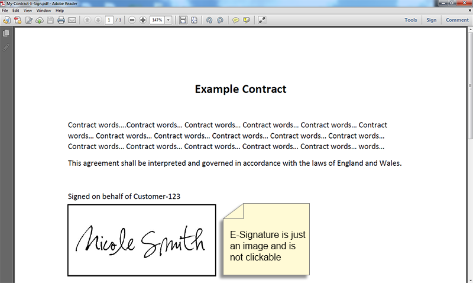

PWU digital signature processing app
Try it!

Get documents signed up faster.
Improve on your cycles, support your efficiency
It is a quick and convenient approach to sign and endorse documents and submit signature demands in a flash.
Embrace every one of the advantages of our simple and completely incorporated electronic signature arrangement.

Cut costs
Never lose important documents again.

Save time
Quit sitting tight for quite a long time or even a long time for all gatherings to sign your records. Push ahead and close your arrangements in only a couple of snaps.

Reduce errors
Take out manual tasks and work on the nature of the reports rounded out and signed. Ensure parts that require a signature are agreed upon.

- 2021 PWU Digital Signature Processing App. All rights reserved.